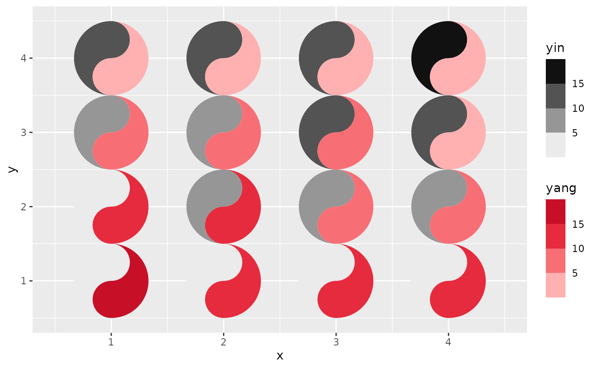
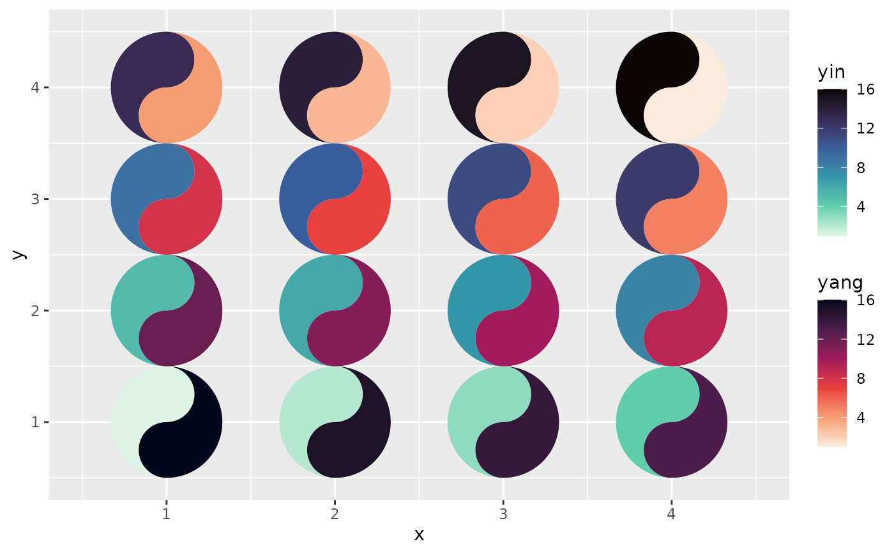

Ready-made fill scales carrying ggtaichi's palette conventions, for the
places where geom_taichi()'s automatic scale choice is not what you want:
pass one to its yin_scale / yang_scale argument, or use it directly with
geom_yin_fish() / geom_yang_fish() when you are stacking scales by hand.
Usage
scale_taichi_yin_c(
name = ggplot2::waiver(),
palette = "default",
colors = NULL,
colours = NULL,
...
)
scale_taichi_yang_c(
name = ggplot2::waiver(),
palette = "default",
colors = NULL,
colours = NULL,
...
)
scale_taichi_yin_d(
name = ggplot2::waiver(),
palette = "default",
colors = NULL,
colours = NULL,
n = NULL,
...
)
scale_taichi_yang_d(
name = ggplot2::waiver(),
palette = "default",
colors = NULL,
colours = NULL,
n = NULL,
...
)
scale_taichi_yin_binned(
name = ggplot2::waiver(),
palette = "default",
colors = NULL,
colours = NULL,
...
)
scale_taichi_yang_binned(
name = ggplot2::waiver(),
palette = "default",
colors = NULL,
colours = NULL,
...
)
scale_taichi_yin_viridis_c(name = ggplot2::waiver(), ...)
scale_taichi_yang_viridis_c(name = ggplot2::waiver(), ...)
scale_taichi_yin_viridis_d(name = ggplot2::waiver(), ...)
scale_taichi_yang_viridis_d(name = ggplot2::waiver(), ...)Arguments
- name
Legend title. Defaults to the aesthetic's label, as elsewhere in ggplot2.
- palette
The palette pair the ramp is taken from: the name of a
taichi_palette()preset, or a list withyinandyangcolour vectors, for example the output oftaichi_palette_pair().- colors, colours
An explicit colour vector, used instead of
palette.- ...
Passed on to the underlying ggplot2 scale (
ggplot2::scale_fill_gradientn(),ggplot2::discrete_scale(),ggplot2::scale_fill_stepsn()orggplot2::scale_fill_viridis_c()), solimits,breaks,labels,guide,na.value,n.breaksand the rest all work as usual.- n
For the discrete scales, how many colours to draw from the ramp before interpolating; defaults to the ramp's own length.
Details
Each function comes in a yin and a yang form, which differ only in which half of the palette pair they take.
scale_taichi_yin_c(),scale_taichi_yang_c()Continuous gradients, the same construction
geom_taichi()builds automatically for numeric sources.scale_taichi_yin_d(),scale_taichi_yang_d()Discrete scales that sample the ramp for however many levels the data has, skipping its palest end so no category is invisible on a white panel — matching what
geom_taichi()does for factor, character and logical sources.scale_taichi_yin_binned(),scale_taichi_yang_binned()Binned scales: the fill is matched to one of a handful of discrete steps instead of to a position on a continuous luminance ramp.
scale_taichi_yin_viridis_c()and friendsThe Mako and Rocket viridis-family ramps, which are close to luminance matched and stay ordered under colour-vision deficiency.
Why binned scales are the cheapest accuracy win
Reading a value off a continuous luminance ramp is the least accurate perceptual task there is, and it gets worse as a grid grows. Matching a patch to one of five labelled bins is much closer to a categorical lookup, and the legend then tells the reader exactly which values share a colour. On any grid too dense to compare cell by cell — roughly, once the glyphs are smaller than a few millimetres — binning both fish is the single cheapest thing you can do for readability:
geom_taichi(yin = matcha, yang = espresso,
yin_scale = scale_taichi_yin_binned(n.breaks = 5),
yang_scale = scale_taichi_yang_binned(n.breaks = 5),
shared_limits = TRUE)shared_limits and shared_legend compose with all of these: the limits
ggtaichi computes are pushed into the scale you supply, so the two fish end
up with the same breaks and equal values land in the same bin.
See also
taichi_palette() and taichi_palette_pair() for the palettes
themselves, taichi_check_palette() to check a pair is fair.
Examples
library(ggplot2)
d <- data.frame(x = rep(1:4, 4), y = rep(1:4, each = 4),
yin = 1:16, yang = 16:1)
# binned fills, matched limits: the cheapest readability win there is
ggplot(d, aes(x, y)) +
geom_taichi(yin = yin, yang = yang,
yin_scale = scale_taichi_yin_binned(n.breaks = 4),
yang_scale = scale_taichi_yang_binned(n.breaks = 4),
shared_limits = TRUE)

# a viridis-family pair
ggplot(d, aes(x, y)) +
geom_taichi(yin = yin, yang = yang,
yin_scale = scale_taichi_yin_viridis_c,
yang_scale = scale_taichi_yang_viridis_c)
